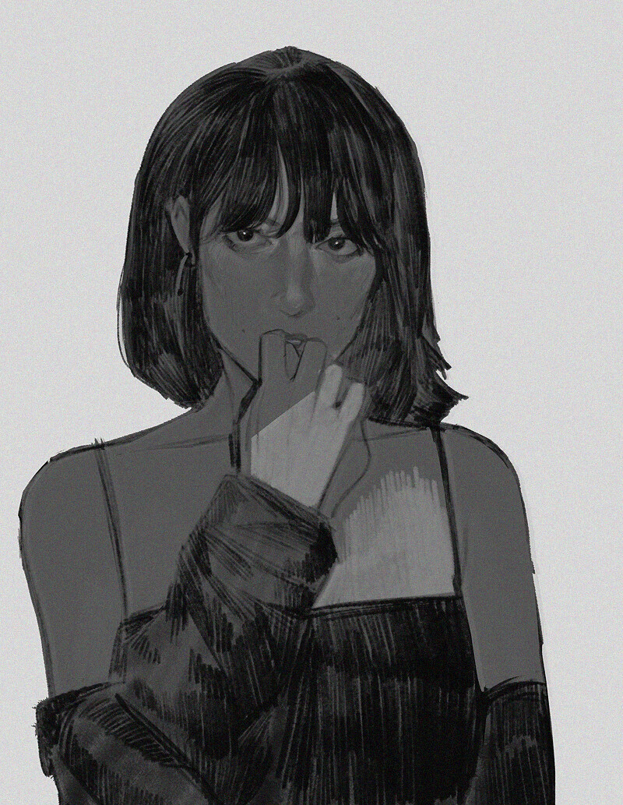
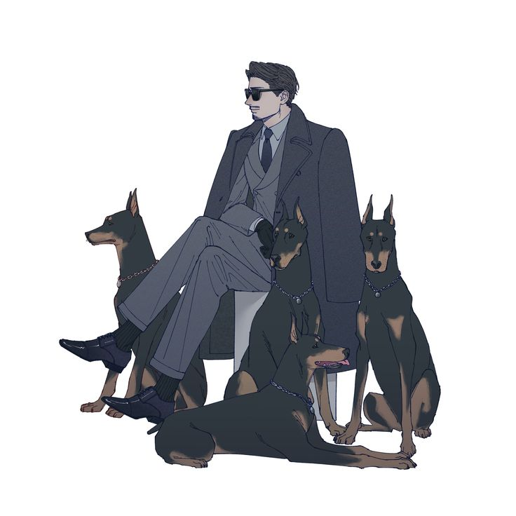
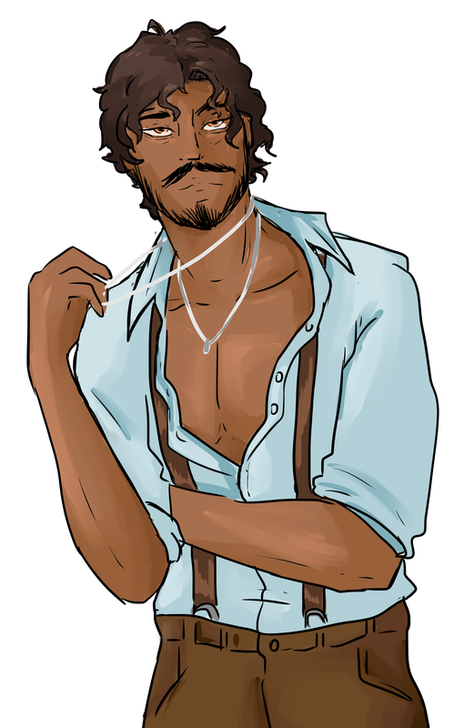

Nebetta
Nebetta
Rien n'est eternel, ni les nations, ni les montagnes. Rien n'est eternel si ce n'est l'honneur.
Information connue
Dans les Elysiums, et lorsqu'elle se présente à vous pour la première fois, elle est Nebetta, princesse du clan Nosferatu et infante d'Atam, le guerrier du peuple arménien.
La seconde rencontre vous apprendra sans doute qu'elle est surtout une perfide menteuse. Son visage, sa voix, son origine, son sang royal, jusqu'à son sire : tout est sujet à caution. Quelqu'un de sa stature attire inévitablement les jalousies, mais pourquoi chercher à démêler le vrai du faux lorsqu'il est si agréable de passer une soirée à ses côtés ?
Histoire
Sa première rencontre attestée avec la cour de la Camarilla remonte à 1859, bien qu'elle raconte avoir été étreinte ici bien avant. Elle fit alors irruption dans l'Elysium de retour de Kushi. Les portes s'ouvrirent dans un fracas, révélant une femme vêtue d'une robe détrempée, le visage couvert de bijoux d'or ternis et les pieds nus.
En sanglots, elle racontait avoir tout perdu : son or, sa réputation, sa demeure. Elle cherchait désespérément son sire, persuadée qu'il se trouvait ici. Chassée de chez elle, elle prétendait avoir été forcée de traverser la Méditerranée à la nage. Oh, comme ceux qui avaient pris sa maison étaient perfides. Comme ils avaient brûlé ses fidèles et bafoué son honneur.
Elle fut intégré dans une coterie afin de s'intégrer a la vie sociale de la ville, au coté de Enry et de Sélim. Il ne fallut pas longtemps avant qu'elle ne retrouve son sire, Atam.
Longtemps resté discret, celui-ci fut parfois aperçu dans les Elysiums que son infante commençait à organiser.
Aujourd'hui, Nebetta est la gardienne de l'Elysium permanent, et les Harpies ont été formées sous sa tutelle.
S'il est une certitude, c'est qu'elle a toujours possédé un talent remarquable pour la mise en scène.
Ou trouver la belle dame
Nebetta est toujours présente dans son Elysium, et est ainsi simple à contacter. Elle est le seul point connu entre la cour et les Nosferatu.
Relations
Lignée
 Atam
Atam- Il est son sire, celui qu'elle à rejoint après avoir tout perdu.

Sophia- Sa position de gardienne d'Elysium signifie qu'elle travaille pour Sophia, et les deux semblent s'entendre convenablement.

Angelos- Pour une raison qui semble personelle, ils se haissent, et tentent de détruite la réputation de l'autre. Cela explique l'abondance de rumeur qui circulent sur eux.

Enry- Ils entretiennent toujours de très bonne relations, et il vient visiter son Elysium chaque semaine.
Rumeurs
- Son sire n'est pas réellement Atam
- Est un espion pour le clan Tremere
- Est une infiltré des Setites
- Aurait diablerie la véritable infante de Atam